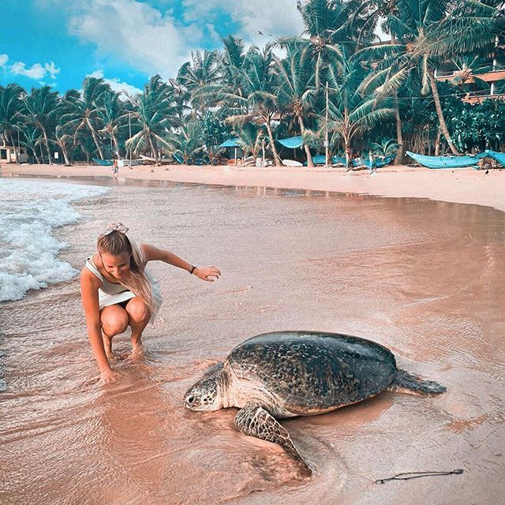

<!DOCTYPE html>
<html>
<head>
<meta name="viwe point" ::content="with=device-width,initical-scale=1.0">
<title>TURTLES OF SRI LANKA</title>
<link rel="stylesheet" href="./styless.css">
</head>
</html>
</head>
</html>
<body>
    <div class="div-bg">
        <nav>
            <div class="nav-links" id="test">
               <ul>
                   <li><a href="./index.html">HOME</a></li>
                   <li><a href="./secondpage.html">CATEGORIES</a></li>
                   <li><a href="./thirdpage.html">THREAT</a></li>
                   <li><a href="#">HIKKADUWA HATCHERY</a></li>
                   <li><a href="./contact.html">OTHER HATCHERIES</a></li>
                   <li><a href="./PURCHASE AND DONATIONS.html">PURCHASE AND DONATIONS</a></li>
               </ul>
            </div>
       </nav> 
             <!-------HIKKADUWA TURTLE HATCHERY--------->

  <section class="HIKKADUWA TURTLE HATCHERY">

    <h1 style="color: aliceblue;">HIKKADUWA TURTLE HATCHERY</h1>
    <p><h3>From rehabilitation of injured sea turtles to providing a safe nesting ground, the sea turtle hatchery in Sri Lanka aims at protecting and saving the sea turtles that visit the golden shores of the island.</h3></p>
    <div class="row">
        <div class="realm-col">
        <h2>How To Reach Hikkaduwa ?</h2>
        <P>A resort town by the sea, Hikkaduwa is located on the South Coast of Sri Lanka’s Southern Province, nearly 17 km north-west of Galle District and about 61 miles from Colombo. Known for its beaches and strong tides, the beach of Hikkaduwa is sprinkled with palms, restaurants and pubs. Sheltering the shallow waters opposite the beach is the Hikkaduwa National Park, which is considered the coral reserve and sanctuary to exotic varieties of fish and marine turtles. With ample accommodation options and a beachside view, Hikkaduwa’s earned the best spot for surfing, second in line in the Island Country. With nearly 3 villages covering the resort area and a 4 km line of places to eat, drink, stay or shop at, Hikkaduwa’s beaches are beautiful and wide. Here's how you can reach Hikkaduwa.</P>
        <h4>By Train</h4>
        <p>Traveling by train is the cheapest and the fastest way to reach Hikkaduwa. Sri Lankan railways operate trains from Colombo Fort Station to Hikkaduwa every 4 hours on the Colombo-Matara route, which takes about 2 hours max and costs INR 35-130 for the journey. Train numbers - 8056, 8058, 8096 and 8766 are best to travel to Hikkaduwa.</p>

        <div class="reaml-col">
        <h4>By Road</h4>
        <P>The drive from Colombo to Hikkaduwa is roughly 1 hour 34 minutes and either you can drive down there yourself or hire a cab. With operators like Colombo Taxi (colombotaxicabs.com), Kangaroo Cabs (2588588.com) and Budget Taxi (budgettaxilk.com), you can reach Hikkaduwa in an estimated cost of INR 4,200-5,500.
            A self-drive to Hikkaduwa would cost you about INR 600-1000 on the fuel with the additional cost of car rental.</P>
            <div class="row">
                <div class="me-col">
                   
                    <div class="photo">     
                    </div>
                </div>

   <a></a> 
  <map name="#Hikka">
  <area shape="rect" coords="34,44,270,350" alt="Hikkaduwa" href="https://goo.gl/maps/d9SprbZd26ngdWxU6">

</map>
<br>
<br>
            </div>
        </div>
        <p><i>(Map to Hikkaduwa turtle hatchery)</i></p>
        <div class="row">
            <div class="me-col">
                
                <div class="photo">     
                </div>
            </div>
            <div class="me-col">
                 
                 <div class="photo">      
                 </div>
            </div>    
            <div class="me-col">
                
                <div class="photo">               
            </div>
            </div>
            <div class="me-col">
                
                <div class="photo">      
                </div>
            </div>
        </div>
        <br>
  <div>
   <a href="./tikdel.html">
   <button>BOOK NOW</a></button>
</a>
  </div>
  <br>
        
          <div class="kombat-col">
            <h2>Conclusion</h2>
            <p>The sea turtle hatchery is a nice place to visit if you’re in Hikkaduwa. The turtles are an amazing sight and it’s a special treat if you’re an animal lover. Fun fact: it’s a family-run conservation hatchery. It was first set up by a man named Ariyapala, and passed down to his daughter who tragically lost her life in the tsunami of 2004, after which Ariyapala’s son took over and rebuilt the hatchery with foreign aid.</p>
          </div>  
        
          <br>      
          <head>
            <div class="wrapper">
                <div class="button">
                   <div class="icon">
                      <i class="fab fa-facebook-f"></i>
                   </div>
                   <span>Facebook</span>
                </div>
                <div class="button">
                   <div class="icon">
                      <i class="fab fa-twitter"></i>
                   </div>
                   <span>Twitter</span>
                </div>
                <div class="button">
                   <div class="icon">
                      <i class="fab fa-instagram"></i>
                   </div>
                   <span>Instagram</span>
                </div>
                <div class="button">
                   <div class="icon">
                      <i class="fab fa-linkedin"></i>
                   </div>
                   <span>linkedin</span>
                </div>
                <div class="button">
                   <div class="icon">
                      <i class="fab fa-youtube"></i>
                   </div>
                   <span>YouTube</span>
                </div>
             </div>
          </head>
            